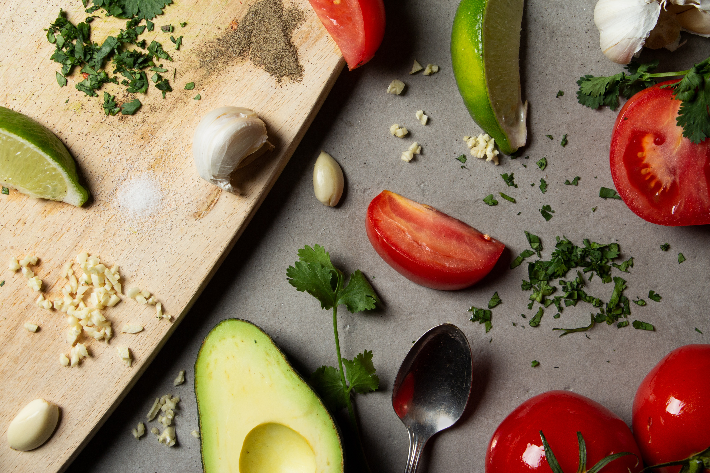

Eu sou apaixonada por atividades físicas. O CrossFit é a minha principal paixão, mas também já pratiquei Muay Thai e adoro caminhar ouvindo música. Manter o corpo em movimento é importante para mim.
Eu tenho um grande interesse pela culinária, tanto em cozinhar quanto em apreciar as refeições. A arte de preparar alimentos me fascina, assim como a diversidade de sabores e texturas encontrados na comida.

Gosto de tocar violão. É um passatempo que me traz satisfação e diversão. É uma atividade que me distrai e me proporciona momentos de relaxamento.